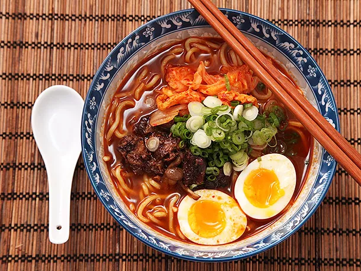

Description
A homemade version of Korean-style spicy beef instant noodles made with short ribs, Korean chili paste, and kimchi.
Ingredients
- 1 (6-inch piece kombu (sea kelp)
- 2 ounces niboshi or shaved katsuobushi
- 12 scallions, divided
- 2 tablespoons canola oil
- 2 pounds beef short ribs
- 1 medium onion, split in half
- 1 (3-inch) knob ginger, cut into three slices
- 8 cloves garlic, divided
- 2 table spoons gochujang, plus more to taste
- 1 tablepsoon doubanjiang
- 1 1/2 quarts homemade or store bought low sodium chicken stock
- 1 tablespoon gochugaru, plus more to taste
- 1 (8-ounce) jar cabbage kimchi, with its juice
- 1 table spoon soy sauce
- salt and freshly ground pepper
- 8 ounces hon-shimeji or sliced shiitake mushrooms
- 4 to 6 servings ramen-style noodles
- 4 to 6 soft boiled eggs
Instructions
- Cover kombu with 1 quart cold water. Bring to a boil over medium-high heat. Immediately reduce heat to low and add niboshi or katsuobushi. Let steep for 15 minutes, then drain broth and discard solids. Set aside. While broth simmers, roughly chop 8 scallions and set aside. Finely slice remaining 4 scallions and refrigerate in a sealed container until ready to use.
- Heat 1 tablespoon oil in a heavy Dutch oven or stock pot over high heat until lightly smoking. Add as many short ribs as fit in a single layer and cook, turning occasionally, until browned on all sides, about 10 minutes total. Transfer to a large bowl and repeat until short ribs are all browned.
- Add onion (cut side down) and ginger to pot and cook until well browned, about 5 minutes. Add 6 cloves garlic and roughly chopped scallions and cook, stirring, until lightly browned, about 3 minutes. Return short ribs to pot along with gochujang and doubanjiang. Stir to coat vegetables and beef in spice mixture, then add strained kombu broth and chicken broth, scraping up any browned bits from the bottom of the pot. Bring to a boil, reduce to a bare simmer, cover with the lid slightly cracked, and cook until beef easily separates from the bones, about 4 hours. For best results, allow to cool and transfer to refrigerator overnight.
- When ready to proceed, strain soup through a fine mesh strainer (if refrigerated overnight, you'll have to reheat it slightly until it liquefies). Transfer liquid to a medium pot and skim off any excess fat. Pick out short ribs and transfer to a bowl. Discard remaining solids. When cool enough to handle, pick meat off of short rib bones and transfer to a cutting board. Discard bones. Roughly chop meat and set aside.
- Add gochugaru to broth. Place a fine mesh strainer over the pot and strain kimchi juice into the broth. Finely mince garlic with a garlic press or a microplane and stir into broth. Add soy sauce. Season broth to taste with salt, pepper, and extra gochugaru and gochujang if a spicier flavor is desired. Bring to a simmer and keep warm.
- Heat remaining tablespoon oil in a medium skillet over medium-high heat until shimmering. Add mushrooms and cook until lightly browned, about 4 minutes. Add chopped short rib and cook, tossing occasionally, until crisped in spots and well browned, about 5 minutes longer. Remove from heat and set aside.
- Cook ramen noodles according to package instructions. Divide into individual pre-heated serving bowls. Top with broth, followed by crisped beef and mushrooms, sliced scallions, kimchi, and a soft boiled egg split in half. Serve immediately.